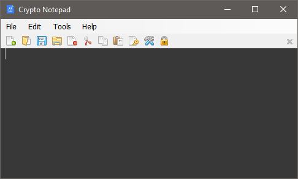

It is often necessary to protect important notes in order to prevent them from being accessed by others, but text editors that offer encryption features are sometimes too complex for users who just want a secure Notepad alternative. Crypto Notepad stands out through its relatively simple design, as it looks very similar to the standard Windows Notepad. It offers a few extra features, such as encryption and a customizable UI, but it remains lightweight and very easy to use.
Besides the main features of the default Windows Notepad, also supports Drag and Drop, detect URLs and email links, association with the application extension.
This app can be run from any location without being installed on your PC beforehand. This means you can place it on a portable storage device and use it to create secure notes on the go.
App allows you to create secure notes using AES algorithms, able to customize different parameters of the encryption, such as: hash algorithm, key size, password iterations, salt.
Crypto Notepad is an open source project. It is distributed free of charge and without any obligations, it will remain so always.